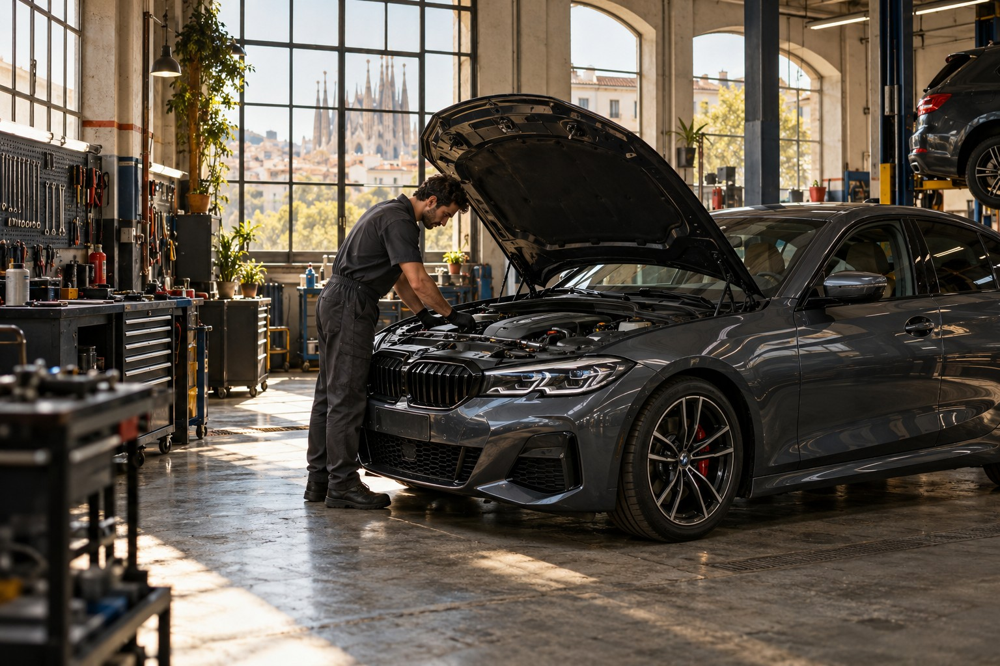

Mantenimiento
Aceite, filtros y revisiones periódicas. Los pequeños cuidados que hacen grande cada recorrido.

BARCELONA · TALLER MULTIMARCA
Mecánica precisa. Conversaciones claras. Cuidamos lo que te mueve para que tú solo pienses en el próximo kilómetro.
Presupuesto previo · Tú decides antes de reparar
01 / Te escuchamos
02 / Te explicamos
03 / Lo cuidamos
LO QUE HACEMOS
De una revisión rutinaria a una avería inesperada. El mismo compromiso: hacer lo necesario y explicarlo bien.
Aceite, filtros y revisiones periódicas. Los pequeños cuidados que hacen grande cada recorrido.
Escuchamos lo que te preocupa y comprobamos qué ocurre. Después, te lo explicamos sin tecnicismos.
Revisamos el contacto con la carretera y la respuesta de tu coche. Tu seguridad empieza aquí.
PERSONAS DETRÁS DE CADA REPARACIÓN
Tu coche forma parte de tu vida. Por eso queremos que entiendas cómo lo cuidamos. Nos tomamos el tiempo de escucharte, revisar y explicarte las opciones.
Recibes una valoración antes de autorizar el trabajo.
Si aparece algo más, lo consultamos contigo.
SIN VUELTAS. SIN SORPRESAS.
Elige el servicio y una fecha preferida. Si no sabes qué necesita, empezamos por escucharte.
Comprobamos el vehículo y te explicamos el diagnóstico, las opciones y el presupuesto.
Con tu aprobación, nos ponemos manos a la obra. Te informamos hasta la entrega.
ANTES DE VENIR
Puedes probar la solicitud de demostración. No envía datos ni confirma una cita real.
Selecciona «No lo tengo claro» en el formulario. En un taller real, el siguiente paso sería una valoración del vehículo.
La propuesta de atención contempla explicar el presupuesto y pedir tu aprobación antes de intervenir.
EL PRÓXIMO PASO, CONTIGO.